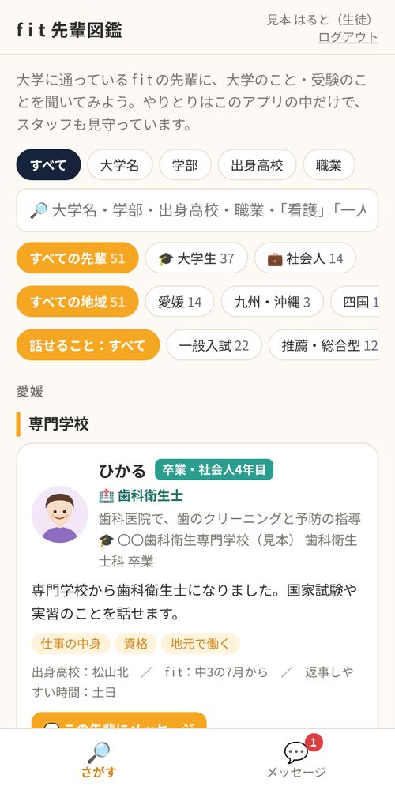
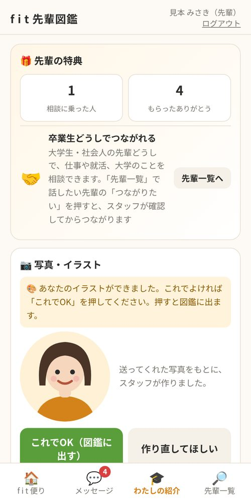
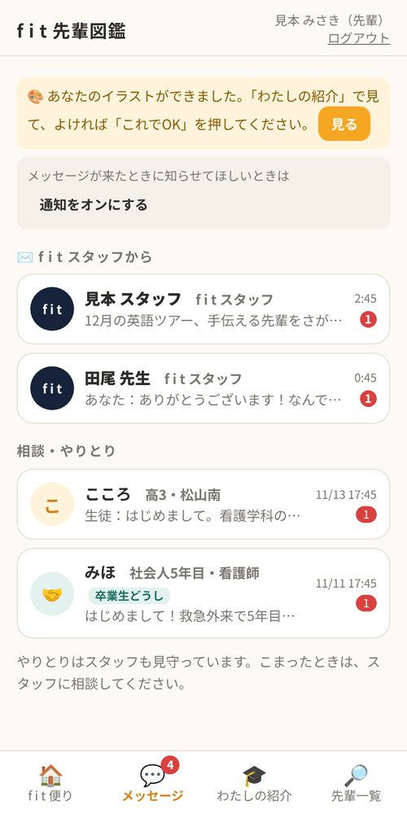
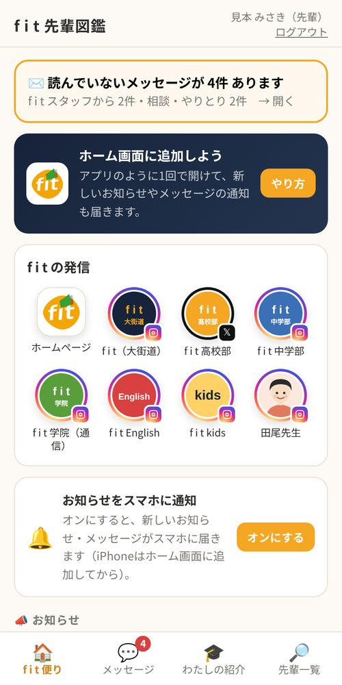
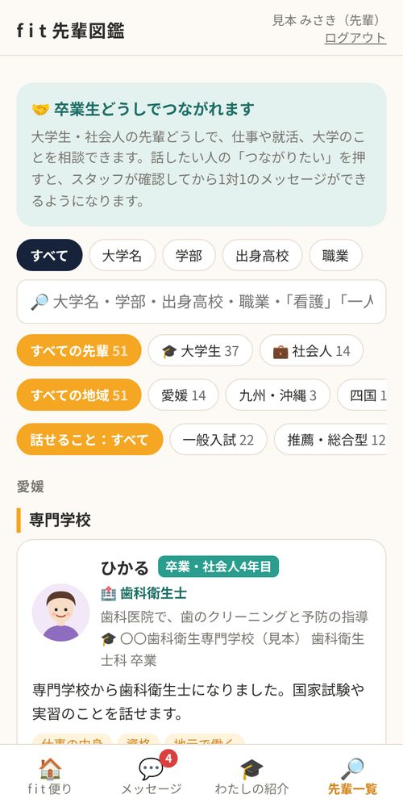

卒業生のみなさんへ
後輩の「知りたい」に、先輩の経験で答えてください。
下の画面は見本です（人やデータは架空です）。

生徒は、大学・学部・仕事・出身高校から先輩をさがせます。f i t のパソコンにも出ます。

大学・学部や仕事、話せることを書きます。ニックネームでもOK。写真から、スタッフがイラストも作ります。

後輩からの相談に、都合のいいときに返事。やりとりはスタッフが見守っています。

f i t のいまやイベントのお知らせ。「参加したい」も押せます。

卒業生どうしでもつながれます。仕事や就活のことを先輩に聞けます。
← 横にスライドして見られます →
大学・学部、仕事、話せること（推薦入試・一人暮らし・就活など）とひとこと。図鑑に出す名前はニックネームでもOKです。
メッセージが届いたら、都合のいいときに返事をしてください。いそがしい時期は「休み中」にしておけます。
「先輩の会」などのお知らせが届きます。参加できそうなら「参加したい」を押すだけでスタッフに伝わります。
大学生・社会人の先輩どうしで、仕事や就活、大学のことを相談できます。スタッフが確認してからつながります。
相談に乗った人の数や、後輩からの「ありがとう」が、わたしの紹介に残ります。
f i t 便りで、塾のようすやイベントのお知らせが見られます。
メールアドレス・電話番号・生年月日は、スタッフからの連絡だけに使います。生徒には見えません。勤め先も、出すかどうか選べます。
生徒とのメッセージはスタッフも見ています。こまったときは、スタッフに相談できます。
f i t の卒業生かどうか、紹介の内容をスタッフが確かめてから図鑑に出ます。いつでも直せます。
入るときは、登録したメールアドレスに届く6桁の数字を入れるだけです。
LINE や Instagram の中で開いたときは、Safari（Android は Chrome）で開き直してから登録してください。メールの数字を確かめるときに、そのほうがうまくいきます。
もう登録している人は こちらから入る
わからないことは、f i t のスタッフに気軽に聞いてください。